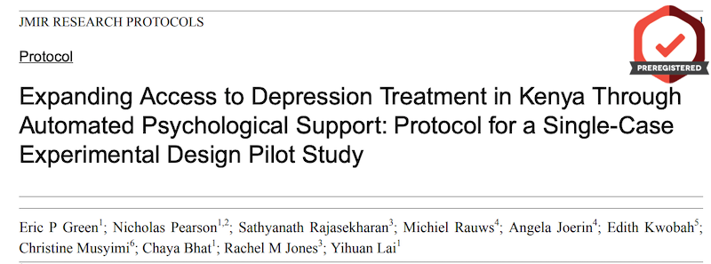
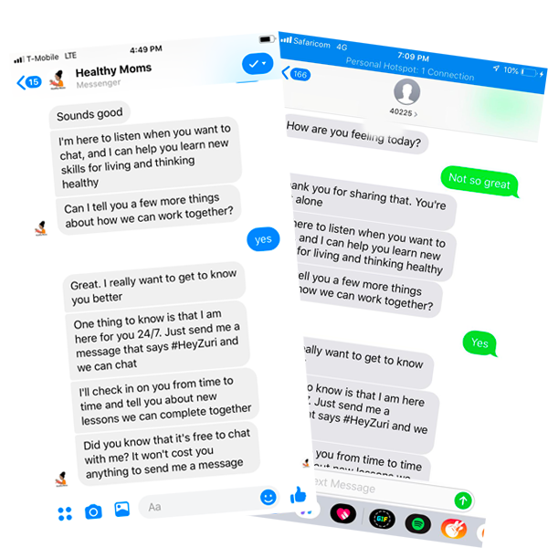

Healthy Moms is a free program that supports pregnant women and new moms through the ups and downs of having a baby.
Or try on a mobile phone browser at m.healthymoms.app
Often because they can't. In many communities, there are few (if any) providers to pay, even if you could afford the bill. More than 3 billion of us live in a country where there is only 1 psychiatrist for every 200,000 people. Psychologists are in even shorter supply.
Our team of researchers at Duke University, AI experts at X2AI, and partners in Kenya (including Jacaranda Health and the Africa Mental Health Research and Training Foundation) are adapting an evidence-based treatment called Thinking Healthy for automated delivery via mobile phone in Kenya.
Or try on a mobile phone browser at m.healthymoms.app
Zuri is a personal health coach. She is available 24/7 to chat for free via Facebook Messenger and SMS (Kenya).
